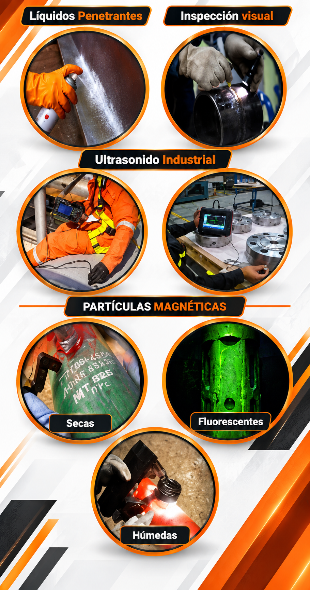

Ultrasonido
Técnica de inspección mediante ondas ultrasónicas para evaluar materiales y componentes.
Evaluación de materiales, componentes y estructuras sin afectar su funcionamiento o integridad.

En SOS4 SERVICES aplicamos técnicas de Pruebas No Destructivas para evaluar materiales, componentes y estructuras sin afectar su funcionamiento.
Estas técnicas permiten detectar indicaciones superficiales y discontinuidades que pueden comprometer el desempeño de un componente.
La inspección mediante PND contribuye a fortalecer los programas de mantenimiento, integridad mecánica y confiabilidad operacional.
Seleccionamos el método de inspección de acuerdo con el componente, material y tipo de evaluación requerida.
Técnica de inspección mediante ondas ultrasónicas para evaluar materiales y componentes.
Método utilizado para identificar discontinuidades abiertas a la superficie en materiales no porosos.
Técnica aplicada en materiales ferromagnéticos para localizar discontinuidades superficiales y próximas a la superficie.
Evaluación visual de superficies, componentes, uniones y condiciones generales del elemento inspeccionado.
La inspección por partículas magnéticas puede realizarse mediante diferentes técnicas según las necesidades de evaluación.
Aplicación de partículas magnéticas en estado seco para la inspección de materiales ferromagnéticos.
Utilización de partículas suspendidas en un medio líquido para facilitar la inspección.
Técnica que utiliza partículas fluorescentes para mejorar la visibilidad de indicaciones durante la inspección.
Las Pruebas No Destructivas permiten obtener información sobre la condición de materiales y componentes sin destruirlos ni afectar su funcionalidad, apoyando la toma de decisiones de mantenimiento e inspección.
Las técnicas PND pueden emplearse en diferentes componentes y estructuras según sus características y necesidades de inspección.
Evaluación de componentes y elementos estructurales.
Inspección de soldaduras para identificar indicaciones y discontinuidades.
Evaluación de piezas y componentes utilizados en equipos industriales.
Aplicación de técnicas PND dentro de programas de inspección y mantenimiento.
Cada inspección requiere definir el método adecuado y evaluar los resultados obtenidos.
Evaluación inicial del componente, superficie y condiciones de inspección.
Determinación del método de Prueba No Destructiva aplicable.
Aplicación del método y análisis de indicaciones encontradas.
Registro de resultados y evidencia obtenida durante la inspección.
Consulta nuestros servicios de Ultrasonido, Líquidos Penetrantes, Partículas Magnéticas e Inspección Visual.